9 Vizualizacija podataka uz paket ggplot2
9.1 Eksploratorna analiza podataka
Eksploratorna analiza podataka (engl. EDA - exploratory data analysis) proces je analize podatkovnog skupa s ciljem upoznavanja s podacima i donošenjem određenih zaključaka. Knjiga R for Data Science (čiji je koautor Hadley Wickham, autor megapopularnih R paketa kao što su stringr, lubridate, plyr, dplyr i sl.)) navodi da se eksploratorna analiza u principu sastoji od tri dijela:
- prilagodba podataka (engl. data wrangling)
- vizualizacija podataka
- izrada modela
pri čemu ovo nije slijedni proces već cirkularni, a faze se često međusobno prožimaju. Bitno je naglasiti da eksploratorna analiza nije proces koji se može automatizirati niti pasivno provoditi; analitičar nije tek promatrač podataka, već ima aktivnu ulogu u procesu. Inicijator cijelog procesa analize upravo su pitanja o podacima koje analitičar uočava i zadaje, a na koje odgovor može dati eksploratorna analiza; pitanja mogu biti raznolika, sažeta ili kompleksna, općenita ili specifična, a vrlo često zahtijevaju visoku razinu kreativnosti i znatiželje od strane analitičara. Ukoliko bismo pokušali dati općeniti predložak o kakvim pitanjima se radi, mogli bi doći do zaključka da su to pitanja: kako se ponaša neka varijabla? Na koji način se mijenja? Koji su odnosi između dvije ili više varijabli? Može li izmjena jedne varijable objasniti izmjenu neke druge varijable? i sl.
Prilagodbu podataka već smo djelomice upoznali učenjem osnovnog R-a te paketa tidyr i dplyr, a u ovoj lekciji upoznat ćemo ono što mnogi smatraju okosnicom eksploratorne analize - vizualizaciju podataka. Treća spomenuta faza procesa - izrada modela - tiče se stvaranja sažetih reprezentacija podataka u obliku matematičkih (ili drugih) modela, a koji opisuju odnose i ponašanje varijabli na koristan i/ili lako interpretabilan način (npr. uočavanje linearne ovisnosti između dvije varijable što se može opisati jednostavnom matematičkom jednadžbom). Modeliranjem ćemo se baviti u jednoj od nastupajućih lekcija.
9.2 Vizualizacija podataka uz pomoć jezika R
Jedna od često spominjanih karakteristika jezika R su njegove vrhunske funkcionalnosti vezane uz vizualizaciju podataka. Postoji veliki broj analitičara i programera koji R koriste isključivo kao vizualizacijski alat budući da na vrlo brz i jednostavan način mogu proizvesti profesionalne, atraktivne i lako interpretabilne grafove. Osnovni jezik R sam po sebi sadrži vrlo dobru podršku za stvaranje grafova (tzv. base plot sustav), no prava moć vizualizacije krije se u brojnim dodatnim paketima koji su danas dostupni preko CRAN repozitorija.
Osnovna podrška za stvaranje grafova ostvaruje se uz pomoć generičke funkcije plot a njena velika prednost je iznimna jednostavnost. Gotovo svaka popularnija klasa ima vlastitu implementaciju ove funkcije, što znači da je za “brzu” vizualizaciju često dovoljno samo proslijediti željeni objekt (ili objekte) navedenoj funkciji. Npr. ako funkciji proslijedimo dva numerička vektora jednake veličine, funkcija plot će automatski stvoriti graf sa prvim vektorom mapiranim na x-os a drugim na y-os (prikazane uz pomoć linearne kontinuirane skale). Funkcija će također automatski dodati prikladne anotacije kao što su linije za osi, oznake na osima (engl. tickmarks) i pripadajuće vrijednosti, nazive osi i sl.
Zadatak 9.1 - funkcija ‘plot’
Osnovna podrška je funkcionalna i jednostavna, ali ograničena. Na stvoreni graf se mogu dodavati nove stvari, ali ne i modificirati. Isto tako, fino podešavanje pojedinih aspekata grafa često pozive čini glomaznim i nečitljivim te se gubi dimenzija jednostavnosti (koja je glavni razlog korištenja funkcije plot).
Neki od popularnih paketa za vizualizaciju su grid i lattice. Paket grid nudi bogatiji skup funkcija za stvaranje vizualizacija od onih dostupnih unutar osnovne podrške, ali nema mogućnosti izračuna statistika vezanih uz samu vizualizaciju te je to često potrebno obaviti “ručno” prije pozivanja vizualizacijskih funkcija. Paket lattice je posebno popularan za stvaranje tzv. “uvjetnih” ili “facetiranih” grafova (engl. facet - aspekt, značajka), što znači veći broj grafova istog tipa gdje svaki odgovara pojedinoj vrijednosti neke značajke (npr. usporedba nekih veličina u nekoj populaciji ovisno o spolu ili dobi). Paket lattice također ima podršku za automatsko stvaranje legendi i sl. što se kod drugih paketa često mora raditi ručno. Potencijalni problem ovog paketa jest činjenica da nije zasnovan ni na kakvom formalnom modelu, tako da ga je teško proširivati dodatnim funkcionalnostima.
Postoji još popularnih paketa, bilo namijenjenih općenitom stvaranju vizualizacija ili nekim specifičnim primjenama, no za kraj ćemo spomenuti jedan od danas najpopularnijih vizualizacijskih paketa jezika R - paket ggplot2. Autor ovog paketa je već spominjani Hadley Wickham, a zasnovan je na tzv. “grafičkoj gramatici” (zato se i zove ggplot2, gdje dvojka zapravo dolazi od činjenice da je to paket za crtanje dvodimenzionalnih vizualizacija).
Popularnost ovog paketa krije se u tome da pokušava objediniti prednosti osnovne podrške za crtanje grafova kao i paketa lattice ali na temelju formalnog, jasno definiranog modela. Prednost ovog pristupa jest ta što omogućuje stvaranje širokog spektra vizualizacija na osnovu koncizne, jasne i sažete sintakse te omogućuje lako proširenje dodatnim funkcionalnostima. Potencijalni problem jest nešto strmija inicijalna krivulja učenja budući da je potrebno prvo usvojiti “logiku” stvaranja grafa, tj. osnovne principe navedene “grafičke gramatike”. No jednom kada se premosti ova početna prepreka, stvaranje kvalitetnih vizualizacija jest brzo, lako i učinkovito, što dokazuje i činjenica da je ggplot2 danas jedan od najpopularnijih paketa za vizualizaciju podataka koji je izišao iz granica jezika R te se reimplementira i u drugim programskim jezicima za analizu podataka (npr. paket ggplot u jeziku Python, paket gramm u Matlab-u).
Zbog svega gore navedenog, mi ćemo se u nastavku usredotočiti upravo na paket ggplot2 kao jedan od najpopularnijih i najprimjenjivijih vizualizacijskih paketa jezika R.
9.3 Grafička gramatika i paket ggplot2
Grafička gramatika (engl. grammar of graphics) nam daje sljedeće:
- principe koji omogućuju stvaranje i interpretaciju kompleksnih vizualizacija
- naputke što predstavlja “dobro oblikovanu” ili “kvalitetnu” vizualizaciju
Kao što jezična gramatika omogućuje oblikovanje “kvalitetnih” rečenica, tako i grafička gramatika zapravo grafove gleda kao svojevrsne “rečenice” čije razumijevanje ovisi o tome kako pojedine komponente uklopiti u jasnu, razumljivu cjelinu. No, također kao kod jezične gramatike, rečenica može biti gramatički ispravna ali i dalje besmislena - drugim riječima, gramatika je temelj za kvalitetu, ali ne i garancija iste; smislenost i svrhovitost konačnog rezultata i dalje ovisi o kreativnosti i sposobnosti stvoritelja rečenice, tj. vizualizacije.
Kako bi olakšali učenje grafičke gramatike, što realno predstavlja najveću prepreku svladavanju paketa ggplot2, važno je da se pridržavamo osnovnog principa kojeg možemo parafrazirati ovako - kvalitetna vizualizacija je zapravo kompozicija niza sastavnica od kojih svaka ima jasno definiranu ulogu. Shodno tome, graf ne bismo trebali gledati kao jednu kompaktnu cjelinu, već trebamo pokušati identificirati pojedine dijelove i naučiti na koji način oni doprinose konačnoj vizualizaciji. Navedeni dijelovi nisu nužno vizualne komponente grafa, tj. dijelovi koji sačinjavaju grafiku koju gledamo, već gradivni elementi koje vizualizacijski sustav koristi kako bi stvorio konačni rezultat.
9.3.1 Aspekti podataka, estetike i geometrije
Za početak uvedimo pojednostavljeni model gramatike od tri komponente:
- podaci (koje želimo vizualizirati)
- estetike (mapiranje podataka na elemente grafa)
- geometrije (grafička reprezentacija podataka na grafu)
Podaci su, naravno, ključna komponenta grafa. Oni predstavljaju ono što želimo prikazati grafom. Isto tako, oni su relativno neovisni od ostalih komponenti vizualizacije - iste principe vizualizacije možemo primijeniti nad različitim podatkovnim skupovima. No usprkos tome, stvaranje novog grafa najčešće počinje sa odabirom podatkovnog skupa, čije značajke diktiraju daljnje korake procesa vizualizacije.
Estetike (engl. aesthetics) zapravo nemaju veze sa doslovnom interpretacijom “znanosti o lijepom”, već se zapravo radi o odabiru načina kako određene segmente podatkovnog skupa prikazati na grafu. Naime da bi vizualizacija podatka imala smisla, mi taj podatak moramo prikazati na vizualno interpretabilan način. Uobičajen princip jest prikaz uz pomoć položaja na dvodimenzionalnoj ravnini uz pomoć kartezijevog koordinatnog sustava koji ravninu ortogonalno segmentira uz pomoć dvije osi, nazvane x i y, koje predstavljaju dvije “osnovne estetike”. One nisu jedine - estetike su također i boja, oblik, uzorak i sl. Jedan od načina lakšeg razumijevanja što je zapravo estetika može biti i “ono što se često objašnjava legendom uz graf”; ako je estetika zapravo mapiranje na vizualnu komponentu grafa, legenda grafa je njezin inverz - objašnjenje što koja komponenta zapravo znači.
Konačno, geometrija zapravo predstavlja opis kako konkretno nacrtati ono što želimo vizualizirati. Na primjer, ako smo mapirali neke stupce na x i y os, onda bi se pojedina obzervacija mogla prikazati točkom, što je tzv. point geometry. Mogli smo se isto tako odlučiti na linijsku geometriju (line geometry) i iste podatke prikazati linijom koja povezuje obzervacije. Geometrija je zapravo ono što kolokvijalno zovemo “tip grafa”, tj. crtamo tzv. “točkaste grafove” (engl. scatterplot), linijske grafove, stupčaste grafove, pite, histograme i sl. - a sve se to svodi na dodavanje odgovarajuće “geometrije” ggplot grafu.
Svaka geometrija ima svoje parametre koji mogu biti opisani fiksno ili biti ovisni o podacima - npr. točka ima svojstva položaja (x i y koordinate), boje i oblika; točke na grafu možemo npr. prikazati kružićem, iksićem ili nekim drugim simbolom, a možemo ih povezati i s nekom estetikom tako da će npr. oblik točke ovisiti o vrijednosti neke kategorijske varijable. Geometrije se mogu “slagati” jedna na drugu tako da isti graf zapravo može biti kombinacija točkastog i linijskog grafa i sl.
Prikažimo ovo sve na primjeru. Za prve primjere koristit ćemo se podatkovnim skupom mtcars kojeg smo dobili s osnovnom distribucijom jezika R unutar paketa datasets. Učitajmo taj podatkovni skup u globalnu okolinu uz pomoć funkcije data.
Zadatak 9.2 - upoznavanje sa podatkovnim skupom ‘mtcars’
# učitajte podatkovni okvir `mtcars` u globalnu okolinu
# proučite okvir `mtcars` (head, glimpse, ?...)# učitajte podatkovni okvir `mtcars` u globalnu okolinu
data(mtcars)
# proučite okvir `mtcars` (head, glimpse, ?...)
glimpse(mtcars)
head(mtcars)## Rows: 32
## Columns: 11
## $ mpg <dbl> 21.0, 21.0, 22.8, 21.4, 18.7, 18.1, 14.3, 24.4, 22.8, 19.2, 17.8,…
## $ cyl <dbl> 6, 6, 4, 6, 8, 6, 8, 4, 4, 6, 6, 8, 8, 8, 8, 8, 8, 4, 4, 4, 4, 8,…
## $ disp <dbl> 160.0, 160.0, 108.0, 258.0, 360.0, 225.0, 360.0, 146.7, 140.8, 16…
## $ hp <dbl> 110, 110, 93, 110, 175, 105, 245, 62, 95, 123, 123, 180, 180, 180…
## $ drat <dbl> 3.90, 3.90, 3.85, 3.08, 3.15, 2.76, 3.21, 3.69, 3.92, 3.92, 3.92,…
## $ wt <dbl> 2.620, 2.875, 2.320, 3.215, 3.440, 3.460, 3.570, 3.190, 3.150, 3.…
## $ qsec <dbl> 16.46, 17.02, 18.61, 19.44, 17.02, 20.22, 15.84, 20.00, 22.90, 18…
## $ vs <dbl> 0, 0, 1, 1, 0, 1, 0, 1, 1, 1, 1, 0, 0, 0, 0, 0, 0, 1, 1, 1, 1, 0,…
## $ am <dbl> 1, 1, 1, 0, 0, 0, 0, 0, 0, 0, 0, 0, 0, 0, 0, 0, 0, 1, 1, 1, 0, 0,…
## $ gear <dbl> 4, 4, 4, 3, 3, 3, 3, 4, 4, 4, 4, 3, 3, 3, 3, 3, 3, 4, 4, 4, 3, 3,…
## $ carb <dbl> 4, 4, 1, 1, 2, 1, 4, 2, 2, 4, 4, 3, 3, 3, 4, 4, 4, 1, 2, 1, 1, 2,…
## mpg cyl disp hp drat wt qsec vs am gear carb
## Mazda RX4 21.0 6 160 110 3.90 2.620 16.46 0 1 4 4
## Mazda RX4 Wag 21.0 6 160 110 3.90 2.875 17.02 0 1 4 4
## Datsun 710 22.8 4 108 93 3.85 2.320 18.61 1 1 4 1
## Hornet 4 Drive 21.4 6 258 110 3.08 3.215 19.44 1 0 3 1
## Hornet Sportabout 18.7 8 360 175 3.15 3.440 17.02 0 0 3 2
## Valiant 18.1 6 225 105 2.76 3.460 20.22 1 0 3 1Vidimo da ovi podaci opisuju karakteristike 32 (stara) automobila kao što su: težina, maksimalna brzina, broj konjskih snaga, broj cilindara i sl.
Budući da su neke od varijabli ovog skupa podataka trenutno numeričke, a zapravo bi im više odgovarao kategorijski tip, možemo prije nastavka provesti kategorizaciju tih varijabli. Usput možemo iskoristiti ovu priliku i prikazati parametar labels koji omogućuje “preimenovanje” kategorija (prema numeričkom ili abecednom rasporedu inicijalnih kategorija).
mtcars$vs <- factor(mtcars$vs, labels = c("V", "S"))
mtcars$am <- factor(mtcars$am, labels = c("automatic", "manual"))
mtcars$cyl <- factor(mtcars$cyl)
mtcars$gear <- factor(mtcars$gear)
mtcars$carb <- factor(mtcars$carb)Kada stvaramo ggplot2 vizualizaciju onda često pomaže da razmišljamo o “slojevima” grafa. Svaki sloj na neki način “prekriva” graf poput prozirne folije, što nam omogućuje postavljanje više različitih tipova reprezentacije podataka na isti graf (npr. prikazujemo točke ali ih i povežemo linijom).
Recimo da nas zanima kako se odnose težina automobila i njegova maksimalna brzina. Intuitivni način vizualizacije bio bi:
- težina automobila (
wt) na x os grafa - potrošnja (
mpg) na y os grafa
Pogledajmo kako ovo izvesti uz pomoć ggplot2 vizualizacije. Uočimo da ćemo za početak namjerno koristiti “opširan” način stvaranja grafa - ovakav način se gotovo nikad ne koristi u praksi budući da postoji puno podesniji, sažeti način poziva metode, no na ovaj način lako ćemo uočiti pojedine bitne elemente izgradnje grafa. Stvorimo tzv. “točkasti” graf (engl. scatterplot) koji pokazuje odnos težine i maksimalne brzine automobila opisanih tablicom mtcars.
9.3.1.1 Prvi ggplot2 graf
ggplot() +
layer( data = mtcars, # 1. podaci
mapping = aes(x = wt, y = mpg), # 2. mapiranja / estetike
geom = "point", # 3. geometrija
stat = "identity", # za sada zanemariti
position = "identity") # za sada zanemariti
Osnovna funkcija za izgradnju jest funkcija ggplot. Ona zapravo inicijalizira objekt klase ggplot. Naime, za ggplot2 vizualizacije specifično je da su grafovi zapravo objekti, a ono što inače smatramo grafom je samo njihova vizualna reprezentacija. Ovdje zapravo leži moć ovakvog tipa reprezentacija - graf je nešto što možemo po volji mijenjati, preoblikovati, proširivati i pohranjivati, a vizualizacija predstavlja konačni nusproizvod upravljanja tim objektom.
Ovakvom objektu potom dodajemo “slojeve” uz pomoć funkcije layer. Sloj objektu dodajemo uz pomoć operatora +, što predstavlja intuitivan prikaz i olakšava rad sa ovakvim tipom grafova. Sloj kao takav ima one gramatičke aspekte o kojima smo ranije govorili - podatke, estetike i geometrije. U pozivu vidimo još dva aspekta grafičke gramatike - statistike i poziciju - koje ćemo objasniti kasnije. Dovoljno je napomenuti da "identity" zapravo znači “ostavi onako kakvo jest”, tj. radi se o nekoj dodatnoj obradi unutar procesa vizualizacije koju za sada zanemarujemo, tj. ne koristimo.
Iako formalno svaki sloj ima svoje gramatičke aspekte, gotovo uvijek postoje aspekti koji su zajednički svim slojevima (npr. vrlo često jedan graf prikazuje jedan podatkovni skup a svi slojevi “dijele” x i y os). Ukoliko imamo ovakve zajedničke aspekte onda ih možemo definirati odmah kod stvaranja objekta ggplot koji onda postaju “default-ni” parametri slojeva koje dodajemo (iako oni uvijek imaju opciju “gaženja” tih parametara svojim aspektima). Isto tako, za stvaranje dodatnih slojeva često se koristimo pomoćnim funkcijama intuitivnog imena koje imaju unaprijed podešene najčešće korištene parametre kako ih ne bismo morali stalno ponovo upisivati. Tako npr. funkcija geom_point dodaje sloj koji nasljeđuje već definirane aspekte a kao geometriju koristi točke.
Pogledajmo sljedeći primjer koji koristi “skraćeni” način stvaranja navedenog grafa:
# prvi `ggplot2` graf, skraćeni način izgradnje grafa
ggplot(mtcars, aes(x = wt, y = mpg)) + geom_point()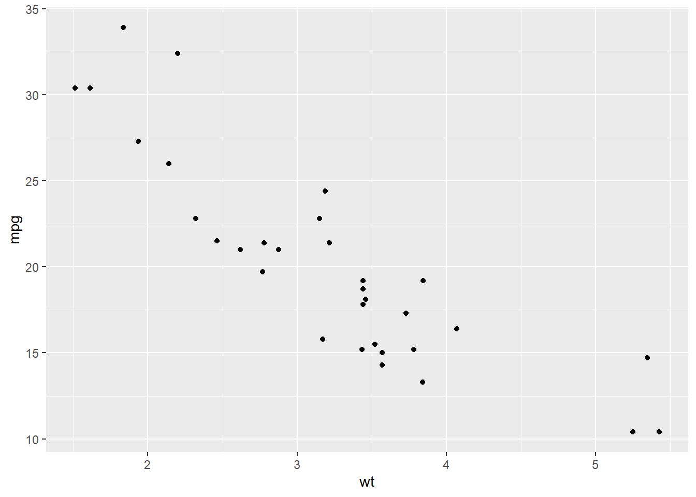
Postoji još jedan “pojednostavljeni” način stvaranja ggplot grafova, a to je uz pomoć funkcije qplot (od “*quick plot”). Ova funkcija zapravo je omotač koji omogućuje da ggplot grafove stvaramo sintaksom vrlo sličnom sintaksi funkcije plot.
## Warning: `qplot()` was deprecated in ggplot2 3.4.0.
## This warning is displayed once per session.
## Call `lifecycle::last_lifecycle_warnings()` to see where this warning was generated.
Glavni razlog postojanja ove funkcije jest orijentiranost korisnicima koji traže brzu i učinkovitu alternativu plot funkciji bez potrebe za učenjem novih koncepata. Iako se možda ovakav način stvaranja grafova možda čini zgodan i jednostavan, dugoročno se ipak isplati naučiti “pravu” ggplot2 sintaksu budući da je qplot funkcija dosta limitirana i - poput funkcije plot - inicijalna jednostavnost se sve više gubi što više prilagodbi vizualizacije želimo provesti.
Vratimo se sada na naš graf - što ako želimo na njemu prikazati dodatni stupac tj. varijablu? Npr. možemo vidjeti da svi auti imaju 4, 6 ili 8 cilindara. No graf koji imamo je dvodimenzionalan - kako dodati “treću dimenziju”? Odgovor je - koristimo neku dosad neiskorištenu estetiku, npr. boju, veličinu ili oblik točaka.
Zadatak 9.3 - Estetika oblika
# stvorite `ggplot` graf skupa `mtcars` sa mapiranjima: x = wt, y = mpg, shape = cyl
# koristite geometriju točke
# što se događa ako koristimo "numeričku" inačicu varijable `cyl` (`as.numeric(cyl)`)Zadatak 9.4 - Estetika boje
Zadatak 9.5 - Kombiniranje estetika

Usporedbom grafova možemo zaključiti da je boju puno lakše vizualno interpetirati od oblika, što znači da je ona često preferirana estetika (ali nije primjerena ako nam grafovi moraju biti crno-bijeli). Isto tako, uočite da možemo lako kombinirati dvije estetike nad istom varijablom, ukoliko želimo.
9.3.1.2 Funkcija labs
Vidjeli smo kako ggplot automatski stvara legendu za svoje estetike te da imenuje osi imenom varijable (osi x i y također možemo smatrati svojevrsnim “legendama”). Ukoliko želimo ručno imenovati osi i legende, ali i dodati naslov grafu možemo se poslužiti funkcijom labs koju također dodajemo kao novi sloj i koja može imati sljedeću sintaksu:
Isprobajmo ovo na primjeru.
Zadatak 9.6 - funkcija ‘labs’
# na sljedećem grafu preimenujte osi i legendu
# te dodajte adekvatni naslov (najbolje nešto što objašnjava graf)
ggplot(mtcars, aes(x = wt, y = mpg, color = cyl, shape = cyl)) + geom_point() 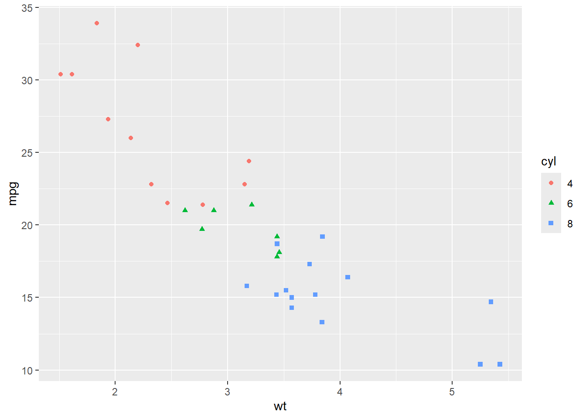
# na sljedećem grafu preimenujte osi i legendu
# te dodajte adekvatni naslov (najbolje nešto što objašnjava graf)
ggplot(mtcars, aes(x = wt, y = mpg, color = cyl, shape = cyl)) + geom_point() +
labs(x = "Težina / 1000 lb", y = "Potrošnja / milja po galonu",
color = "Broj cilindara", shape = "Broj cilindara",
title = "Teži auti više troše (manje milja na jedan galon benzina)")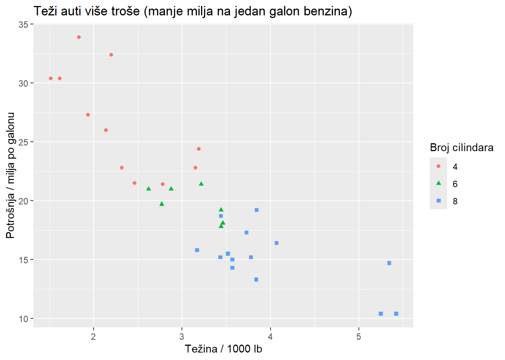
9.3.2 Fiksni parametri geometrije
Prije nastavka, obratimo pažnju na jednu prilično važnu stvar koju do sada nismo razjasnili: što kada želimo utjecati na određene parametre odabrane geometrije, ali želimo ih odrediti fiksno, umjesto da budu povezani sa određenom estetikom, tj. mapiranjem na određenu varijablu? Ili, konkretno - što ako želim napraviti graf ovisnosti potrošnje o težini automobila, ali želim da graf ima točke crvene boje, ili oblika “X” - tj. da su boja i oblik fiksni, umjesto da ovise o nekoj varijabli? Odgovor je zapravo vrlo jednostavan - umjesto da za parametar postavimo ime varijable (npr. wt), mi ga inicijaliziramo na znakovnu ili numeričku vrijednost koja je smislena za taj parametar (npr. "red" ili "#FF0000" za boju, broj od 0 do 25 za oblik).
Primjer krive sintakse:
# ggplot će raditi mapiranje riječi "blue" na estetiku `color`
ggplot(mtcars, aes(wt, mpg)) + geom_point(aes(color = "blue"))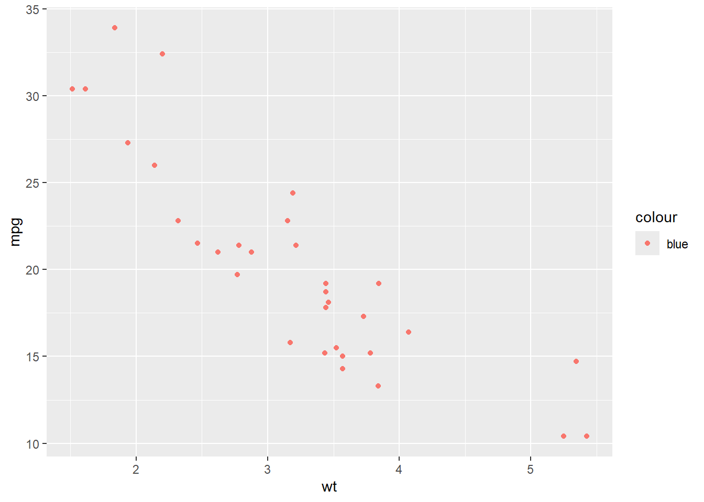
Pokušajte ovo primijeniti na primjeru.
Zadatak 9.7 - fiksni parametri geometrije
# nacrtajte graf ovisnosti potrošnje o težini automobila
# koristite geometriju točke
# točke neka budu crvene boje, neka oblik broj 4 (iksić) i veličinu 39.3.3 Aspekti statistike i pozicije
Vratimo se sada na prvi graf koji je uspoređivao težinu i potrošnju. Što ako smo htjeli ovu povezanost prikazati linijom? Pokušajte donjem pozivu dodati sloj koji koristi postojeće aspekte, ali koristi linijsku geometriju. Možete koristiti funkciju layer sa postavljenim geom parametrom na "line", no popularniji pristup je korištenje pomoćne funkcije geom_line koja radi slično kao funkcija geom_point.
Zadatak 9.8 - dodavanje linijskog sloja
# budući da stalno koristimo istu "osnovicu" grafa možemo ju
# pohraniti u zasebnu varijablu npr. imena `graf`
graf <- ggplot(mtcars, aes(x = wt, y = mpg))
# dodajte varijabli `graf` geometriju točaka a potom linijsku geometrijuDobili smo što smo tražili, no rezultat nije pretjerano uspješan jer je linija isprekidana i vizualno “zakrčuje” graf umjesto da nam donosi dodatnu informaciju (inače, linijska geometrija je vrlo popularna kada radimo sa vremenskim nizovima). Ono što bi nam vjerojatno bilo podesnije jest “izglađena” linija, tj. linija koja aproksimira položaje točaka koje opisuju težinu i potrošnju, umjesto da ih direktno opisuje. Za ovo su nam potrebni dodatni aspekti koje smo već vidjeli u inicijalnom pozivu funkcije ggplot (točnije, funkcije layer) a koje smo u tom trenutku zanemarili, a to su aspekti statistike i pozicije.
Statistika je aspekt koji provodi neke dodatne izračune nad podatkovnim skupom prije njegove vizualizacije. To su najčešće izračuni koje lako možemo i sami provesti “ručno”, no koje je puno praktičnije ostaviti na odgovornost vizualizacijskom alatu, pogotovo ako se radi o izračunu koji se koristi samo za potrebe vizualizacije i nije nam trajno potreban (npr. stupčasti graf - bar chart - prebrojava koliko puta se pojavljuje koja kategorijska varijabla i to prikazuje visinom stupca).
Većina statistika provode agregaciju, ali nije pravilo. Neke od češće korištenih statistika su:
count- prebrojavanje pojava (za kategorijske varijable)bin- raspoređivanje pojava u ladice i prebrojavanje (za kontinuirane varijable)smooth- “zaglađivanje” tj. “usrednjenje” korištenjem odabrane metode (najčešćelmza linearno ililoessza zakrivljeno zaglađivanje)unique- uklanjanje duplikataidentity- direktno preslikavanje, tj. “ostavljanje kako jest”
Ovo su samo neke statistike, a dodatne se mogu naći u dokumentaciji.
Svaka statistika ima svoju pomoćnu funkciju koja prati oblik stat_<ime_statistike> i koja stvara vlastiti sloj vezan uz tu statistiku.
Vratimo se na naš graf ovisnosti potrošnje o težini automobila, ali ovaj put umjesto dodavanja sloja linijske geometrije dodajmo sloj koji će prikazati “zaglađivanje” (tj. statistiku smooth). Ovo je odličan primjer korištenja statističkog aspekta - umjesto da se točke direktno povežu linijom, uz pomoć posebne funkcije ćemo “usrednjiti” vrijednosti a potom ćemo tako usrednjene vrijednosti povezati linijom ili krivuljom. Za ovo je idealna funkcija stat_smooth koja će - ukoliko koristimo default-ne parametre - stvoriti novi sloj sa “zaglađenim” prikazom osi y u ovisnosti o osi x, korištenjem tzv. loess metode, uz prikaz intervala pouzdanosti. Ovakav sloj možemo lako dodati već prije definiranoj varijabli graf.
Zadatak 9.9 - funkcija ‘stat_smooth’ i metoda ‘lm’
# dodajte geometriju točaka na varijablu `graf`
# te potom dodatni sloj sa krivuljom zaglađivanja
# koristite funkciju `stat_smooth` uz parametar `method`
# postavljen na `"lm"` (linearno zaglađivanje)
# i parametar `formula` na `y~x`Zadatak 9.10 - funkcija ‘stat_smooth’ i metoda ‘loess’
Zadatak 9.11 - ‘group’ estetika
# stvorite još jednom isti graf ali sloju zaglađivanja
# dodajte estetiku `group` postavljenu na `cyl`
# Što smo ovime postigli?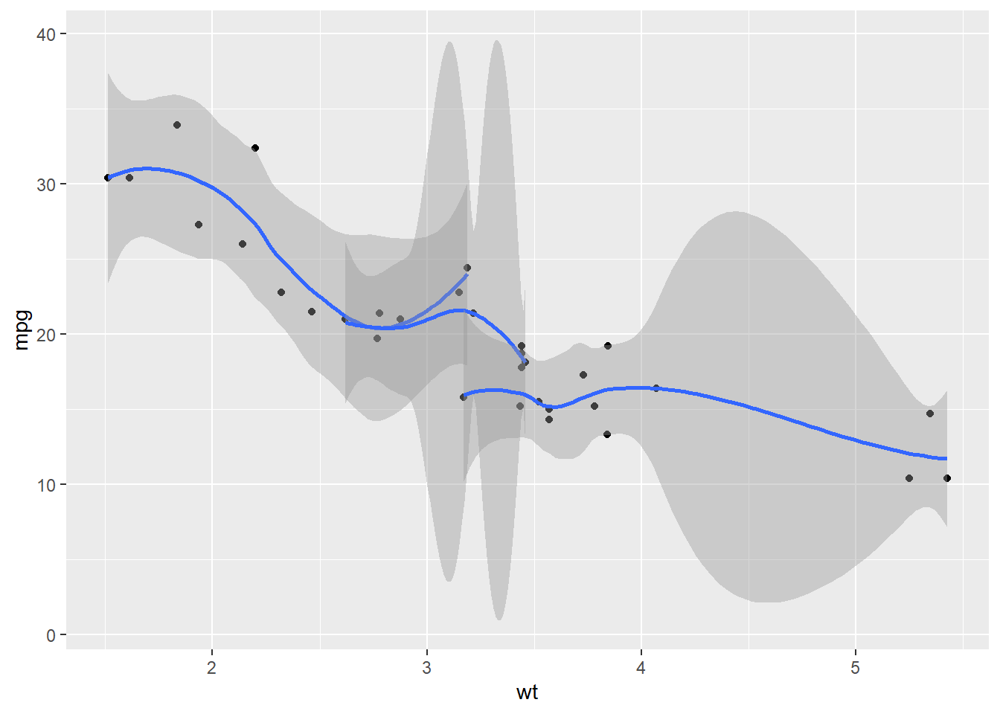
U zadnjem primjeru vidjeli smo tzv. group estetiku. Ona radi slično group_by funkciji iz SQL-a ili dplyr-a, tj. ako računamo agregacije nad nekim skupom podataka, onda se umjesto nad cijelim podatkovnim skupom one rade nad svakom definiranom grupom zasebno. Korištenjem ove estetike možemo na grafu prikazati zasebne izračune prema odabranoj grupi, pa tako je i u ovom primjeru zaglađivanje rađeno po “podgrupama” ovisno o broju cilindara.
Kod nekih vizualizacija može se dogoditi da su podaci već “grupirani” ali mi želimo dodati geometriju koja radi nad cijelim podatkovnim skupom - u tom slučaju najlakše je jednostavno postaviti group estetiku na brojku 1, što će R interpretirati kao “sve je jedna grupa” te to tako i prikazati.
9.3.4 Povezanost geometrije i statistike
U pravilu određene geometrije prirodno koriste “svoje” statistike (npr. stupčasti graf nastaje tako što se prebrojavaju pojave određene kategorije što se onda reprezentira visinom stupca). U praksi ovo znači da kod vizualizacije “statističkih” slojeva zapravo imamo mogućnost definiranja geom sloja sa stat parametrom ili stat sloja sa geom parametrom - pri čemu često nije potrebno ni posebno podešavati “prateći” parametar budući da je po default-u postavljen na onaj koji nam treba. Tako npr. geom_bar već unaprijed koristi count statistiku, a ponaša se analogno stat_count funkciji koja već ima postavljenu bar geometriju.
Koju onda pomoćnu funkciju izabrati, stat ili geom? Ovo je zapravo potpuno nebitno, budući da je učinak isti, ali u praksi se nešto češće koriste geom funkcije većinom zbog malo konzistentnije sintakse izgradnje grafa.
Pokušajmo sada napraviti stupčani graf (engl. bar plot) koji će visinom stupića prikazati broj pojavljivanja određene kategorije - npr. zastupljenost pojedinog broja cilindara u okviru mtcars. Za ovo koristimo pomoćnu funkciju geom_bar koja ima unaprijed postavljenu count statistiku.
Zadatak 9.12 - stupčasti graf
# nacrtajte stupčani graf varijable `cyl` tablice `mtcars`
# koristite funkciju `geom_bar` ili `stat_count`Na sličan način možemo prikazati i kontinuirane varijable. Za razliku od stupčanog grafa, gdje imamo jasno definirane kategorije, ovdje ćemo morati prvo grupirati vrijednosti u tzv. “ladice” (engl. bins) na osnovu kojih gradimo graf koji se zove histogram. Opet koristimo statistiku bin, a za samo stvaranje histograma koristit ćemo pomoćnu funkciju geom_histogram.
Zadatak 9.13 - histogram
# nacrtajte histogram varijable `wt` tablice `mtcars`
# težine podijelite jednoliko u četiri ladice
# koristite funkciju `geom_histogram`Kako zapravo radi statistički aspekt? U pravilu se na osnovu postojećih varijabli izračunavaju jedna ili više novih, najčešće agregiranih varijabli. U dokumentaciji možemo naći konkretne informacije o nazivima tih novih varijabli i njihovom značenju. Na primjer, ako pogledamo dokumentaciju za funkciju stat_bin, možemo vidjeti da ona stvara varijable imena count, ncount, density i ndensity, dok stat_count stvara count i prop. Bilo koja od ovih varijabli može se koristiti kao “visina stupića”, tj. kao estetika y. Razlog zašto ovu estetiku nismo eksplicitno navodili u prethodnom primjeru jest činjenica da funkcija statistike automatski odabire onu agregatnu funkciju koja se očekivano najčešće koristi (u našem slučaju je to bila count). Ukoliko želimo obaviti neku drugu agregaciju, možemo i eksplicitno postaviti estetiku y na odabranu varijablu, samo moramo koristiti ggplot2 konvenciju gdje takve varijable omatamo funkcijom after_stat, kao npr:
Pokušajmo ovo isprobati na primjeru.
Zadatak 9.14 - histogram / ‘ncount’
# nacrtajte histogram varijable `wt` tablice `mtcars`
# težine podijelite jednoliko u četiri ladice
# koristite funkciju `geom_histogram`
# za agregacijsku varijablu postavite `ncount`
# prokomentirajte dobiveni rezultatOtiđimo sada korak dalje. Nacrtajte isti histogram (sa default-nom count agregacijom), no prikažite na njemu i koliko je unutar svake kategorije zastupljen koji broj cilindara. Ovo ćete lako izvesti dodavanjem estetike fill koja reprezentira “punjenje” stupića bojom (za razliku od estetike color koja bi u slučaju stupčanog grafa bojala linije oko pravokutnika).
Zadatak 9.15 - ‘fill’ estetika u histogramu
Ovdje vidimo primjer “kombiniranog” histograma - funkcija će zapravo izračunati frekvencije pojavljivanja za svaku kategoriju težine te za svaki broj cilindara. Jedan od načina kako ovo prikazati bio bi trodimenzionalni graf gdje bi u baznoj ravnini bile kombinacije dvije navedene varijable dok bi treća dimenzija bila rezervirana za visinu stupića - no kod projekcije takvog grafa na dvodimenzionalnu ravninu stupići bi se međusobno prekrivali. Kako bi se rezultati mogli učinkovito prikazati na dvodimenzionalnom grafu, stupići su “repozicionirani” tako da su je stupić za pojedine cilindre postavljen jedan na drugi u sklopu iste kategorije težine. Ovo je zapravo primjer korištenja tzv. pozicijskog aspekta ili jednostavno pozicije.
Pozicija je aspekt koji omogućuje “razmještanje” određenog aspekta grafa ukoliko je to potrebno zbog jasnoće prikaza. U prethodnom primjeru već smo uočili “raslojavanje” stupića prema kategorijskoj varijabli. U ovom slučaju funkcija je zapravo koristila pozicijski aspekt "stack" koji “male” stupiće razmješta tako da ih slaže jedan na drugi. Alternativa je postavljanje aspekta pozicije (position) na “izbjegavanje” - "dodge"- kod kojeg će stupići biti nacrtani u grupicama jedan pored drugog.
Zadatak 9.16 - pozicijski aspekt ‘dodge’
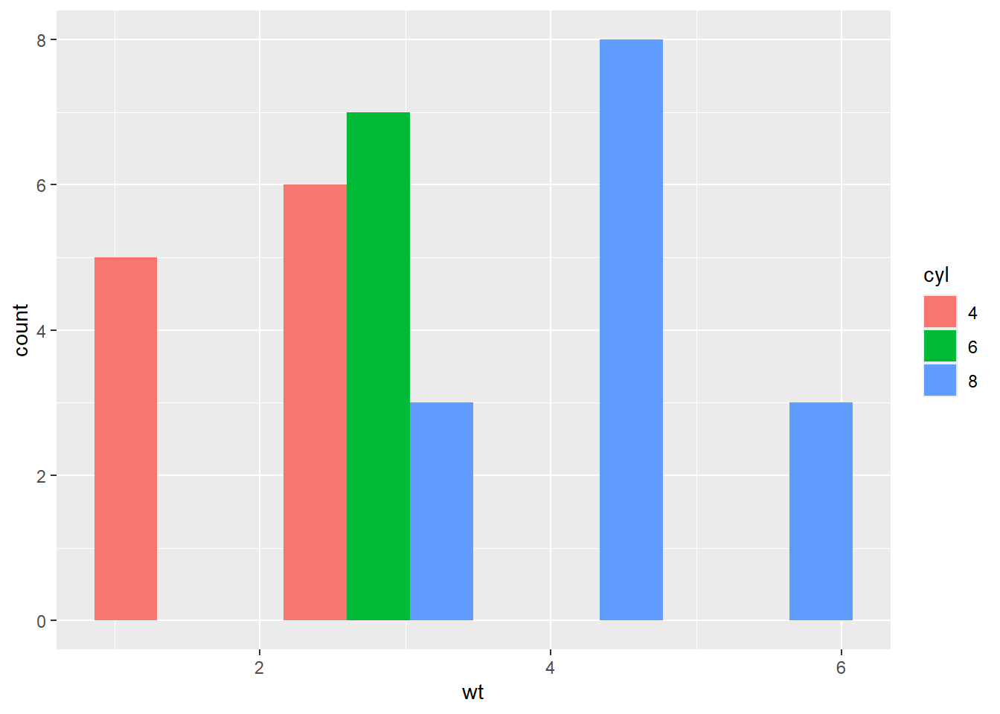
Uočite da smo korištenjem “izbjegavanja” izgubili precizan prikaz intervala pojedine ladice, ali smo dobili jasniji prikaz odnosa između zastupljenosti pojedinih kategorija unutar pojedine ladice.
Zadatak 9.17 - pozicijski aspekt ‘identity’
# nacrtajte opet isti histogram, ali pozicijski aspekt
# `position` postavite na `"identity"`
# parametar geometrije `alpha` postavite na 0.2 ggplot(mtcars, aes(x = wt, fill = cyl)) +
geom_histogram(bins = 4, position = "identity", alpha = 0.4)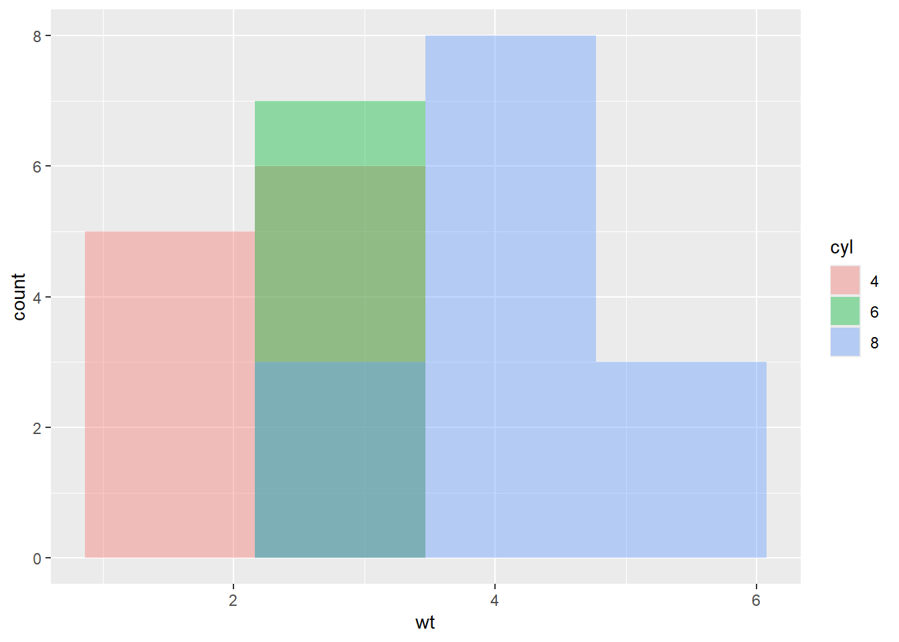
Kao što vidimo, pozicijski aspekt "identity" znači “bez repozicioniranja”.
Pokažimo još jedan pozicijski aspekt - "fill" (nemojte ga miješati sa estetikom fill!).
Zadatak 9.18 - pozicijski aspekt ‘fill’
# nacrtajte isti histogram, ali uz pozicijski aspekt postavljen na `fill`
# radi bolje vidljivosti pravokutnike uokvirite crnom linijom
# objasnite rezultat. Što smo postigli ovakvim histogramom?ggplot(mtcars, aes(x = wt, fill = cyl)) +
geom_histogram(bins = 4, color = "Black", position = "fill")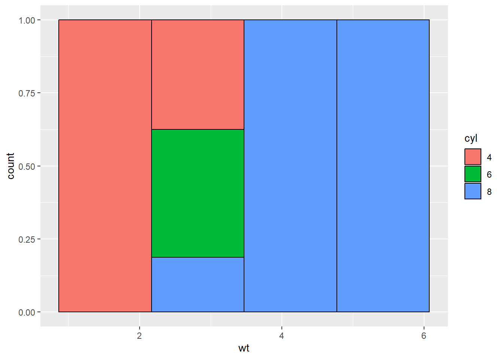
Konačni primjer pozicijskog aspekta kojeg ćemo prikazati je dodavanje “šuma” obzervacijama koje prikazujemo točkastim grafom a koje prekrivaju jedna drugu te djeluju kao jedna obzervacija. Dodavanjem pozicijskog aspekta jitter možemo bolje vizualno komunicirati da se radi o većem broju obzervacija (ovo je učinkovito za manje podatkovne skupove, za veće ćemo često bolje rezultate postići korištenjem parametra transparentnosti, smanjivanjem veličine točaka ili uzorkovanjem skupa prije vizualizacije).
Za primjer ćemo stvoriti jedan “umjetni” podatkovni okvir od 100 “prekrivajućih” obzervacija.
Zadatak 9.19 - pozicijski aspekt ‘jitter’
df <- data.frame( x = c(rep(1, 90), rep(2, 9), 3),
y = c(rep(1, 70), rep(2, 25), rep(3, 5)))
# prikažite navedeni okvir uz pomoć `scatterplot` grafa, tj. točkaste geometrijeZadatak 9.20 - pozicijski aspekt ‘jitter’ (2)
# prikažite isti graf, ali umjesto `geom_point` upotrijebite
# pomoćnu funkciju `geom_jitter` koja ima ugrađen `jitter` pozicijski aspekt
# postavite `width` i `height` parametre na 0.3 (30% dodanog šuma)
# dodatno postavite `color` parametar geometrije na "blue"
# i `alpha` parametar ("prozirnost") na 0.4 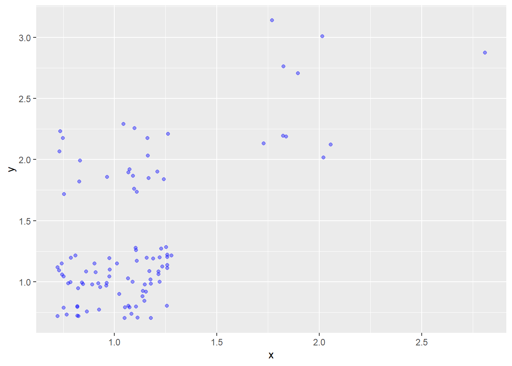
9.3.4.1 Spremanje slike u datoteku
Za kraj ovog dijela naučimo spremiti sliku u datoteku kako bi ju mogli lako ugraditi u neki drugi izvještajni dokument, znanstveni rad, proslijediti elektroničkom poštom i sl.
R po default-u koristi zaslon kao “grafički uređaj” (engl. graphical device). Opcionalno, grafiku možemo “preusmjeriti” na neki drugi “uređaj”, najčešće datoteku određenog tipa (png, tiff, pdf i sl.). Popis svih mogućnosti možemo pogledati uz pomoć naredbe ?Devices. Za spremanje grafova u rasterskom formatu preporučuju se png i tiff formati, dok je za vektorski format uobičajeno koristiti pdf.
Spremanje grafova može se obaviti pozivom funkcije koja odgovara formatu u kojeg želimo pohraniti sliku (npr. funkcija pdf spremiti će iduću sliku u pdf datoteku), no paket ggplot2 nudi nešto praktičniji način - funkcija ggsave pohraniti će zadnje iscrtani* graf u datoteku odabranog imena, pri čemu će format slike zaključiti sama iz ekstenzije datoteke koju odaberemo. Ovaj način je bolji utoliko što imamo šansu prvo vidjeti graf i tek onda se odlučiti na pohranu.
Zadatak 9.21 - spremanje grafa u datoteku
# spremite sljedeći graf u datoteke `figure1.pdf`i `figure1.png`
ggplot(mtcars, aes(x = hp, y = mpg, col = as.factor(cyl))) +
geom_point() +
geom_smooth(formula = y ~ x, aes(x = hp, y = mpg), method = 'loess',
linetype = 4, color = "grey", se = F, inherit.aes = F) +
labs(x = "broj konjskih snaga", y = "potrošnja", col = "broj cilindara")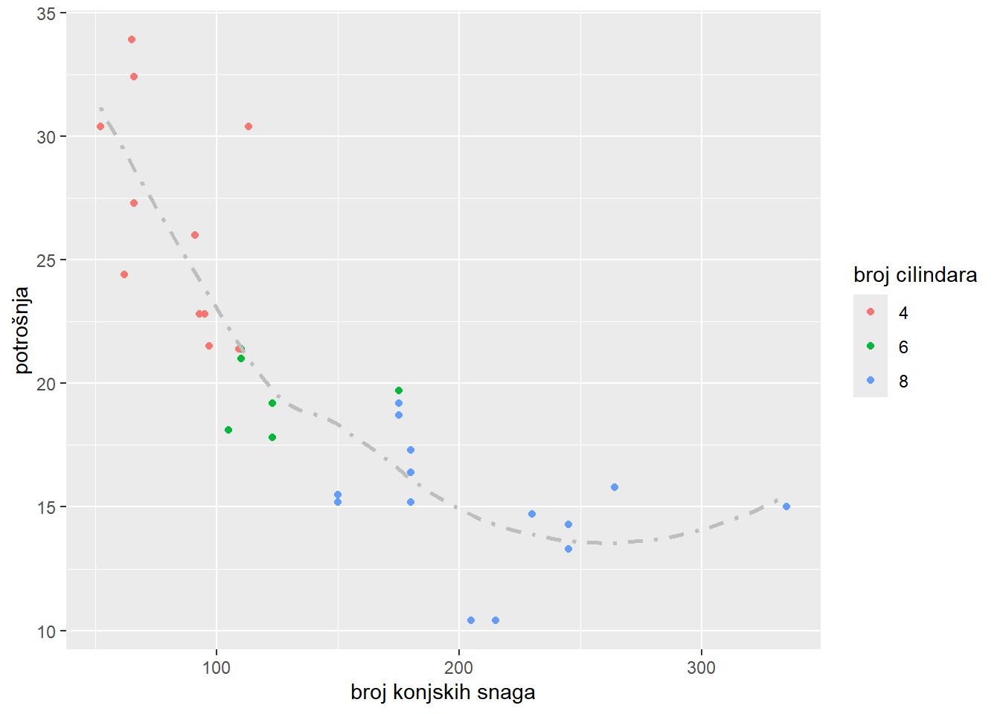
9.3.5 Aspekti skale, koordinatnog sustava i teme
Već smo vidjeli da se stvaranje ggplot2 grafova često svodi na mapiranje stupaca podatkovnog skupa na estetike grafa. Skale kontroliraju način na koji se to mapiranje provodi: kod koordinatnih osi određuju kako se vrijednosti preslikavaju na položaje, a kod boja koja boja odgovara pojedinoj vrijednosti. Skale su također osnova za stvaranje legendi.
Do sada smo uglavnom dopuštali paketu ggplot2 da sam odabere skale. U nastavku ćemo ih prilagoditi kako bismo mogli mijenjati oznake osi i legendi, položaje crtica i boje.
Za kontinuirane numeričke vrijednosti koristimo funkcije oblika scale_*_continuous, a za diskretne vrijednosti scale_*_discrete, pri čemu zvjezdica označava estetiku (x, y, color, fill itd.). Česti parametri su:
name– naziv osi ili legendebreaks– položaji oznaka na skalilabels– tekst oznakalimits– raspon vrijednosti skale
Neke promjene možemo provesti i pomoćnim funkcijama, npr. labs() za nazive osi i legendi ili xlim() i ylim() za ograničavanje raspona.
Zadatak 9.22 - upoznavanje sa podatkovnim skupom ‘penguins’
Za sljedeće primjere koristit ćemo podatkovni skup penguins iz paketa datasets u R-u 4.5.2. On sadrži mjerenja pingvina triju vrsta, uključujući duljinu peraje (flipper_len), duljinu i dubinu kljuna (bill_len, bill_dep), tjelesnu masu (body_mass), vrstu (species), otok (island), spol (sex) i godinu (year). Tjelesna masa izražena je u gramima, a duljine u milimetrima.
## species island bill_len bill_dep flipper_len body_mass sex year
## 1 Adelie Torgersen 39.1 18.7 181 3750 male 2007
## 2 Adelie Torgersen 39.5 17.4 186 3800 female 2007
## 3 Adelie Torgersen 40.3 18.0 195 3250 female 2007
## 4 Adelie Torgersen NA NA NA NA <NA> 2007
## 5 Adelie Torgersen 36.7 19.3 193 3450 female 2007
## 6 Adelie Torgersen 39.3 20.6 190 3650 male 2007
## 'data.frame': 344 obs. of 8 variables:
## $ species : Factor w/ 3 levels "Adelie","Chinstrap",..: 1 1 1 1 1 1 1 1 1 1 ...
## $ island : Factor w/ 3 levels "Biscoe","Dream",..: 3 3 3 3 3 3 3 3 3 3 ...
## $ bill_len : num 39.1 39.5 40.3 NA 36.7 39.3 38.9 39.2 34.1 42 ...
## $ bill_dep : num 18.7 17.4 18 NA 19.3 20.6 17.8 19.6 18.1 20.2 ...
## $ flipper_len: int 181 186 195 NA 193 190 181 195 193 190 ...
## $ body_mass : int 3750 3800 3250 NA 3450 3650 3625 4675 3475 4250 ...
## $ sex : Factor w/ 2 levels "female","male": 2 1 1 NA 1 2 1 2 NA NA ...
## $ year : int 2007 2007 2007 2007 2007 2007 2007 2007 2007 2007 ...
## species island bill_len bill_dep
## Adelie :152 Biscoe :168 Min. :32.10 Min. :13.10
## Chinstrap: 68 Dream :124 1st Qu.:39.23 1st Qu.:15.60
## Gentoo :124 Torgersen: 52 Median :44.45 Median :17.30
## Mean :43.92 Mean :17.15
## 3rd Qu.:48.50 3rd Qu.:18.70
## Max. :59.60 Max. :21.50
## NA's :2 NA's :2
## flipper_len body_mass sex year
## Min. :172.0 Min. :2700 female:165 Min. :2007
## 1st Qu.:190.0 1st Qu.:3550 male :168 1st Qu.:2007
## Median :197.0 Median :4050 NA's : 11 Median :2008
## Mean :200.9 Mean :4202 Mean :2008
## 3rd Qu.:213.0 3rd Qu.:4750 3rd Qu.:2009
## Max. :231.0 Max. :6300 Max. :2009
## NA's :2 NA's :2Zadatak 9.23 - korištenje aspekta skale
Sljedeći graf prikazuje odnos duljine peraje i tjelesne mase pingvina različitih vrsta. Potrebno je pretvoriti tjelesnu masu iz grama u kilograme, imenovati osi i legendu, postaviti crtice na osi x svakih 20 mm od 170 do 230 te u legendi prikazati hrvatske nazive vrsta.
ggplot(penguins, aes(flipper_len, body_mass, color = species)) +
geom_point(alpha = 0.6, na.rm = TRUE)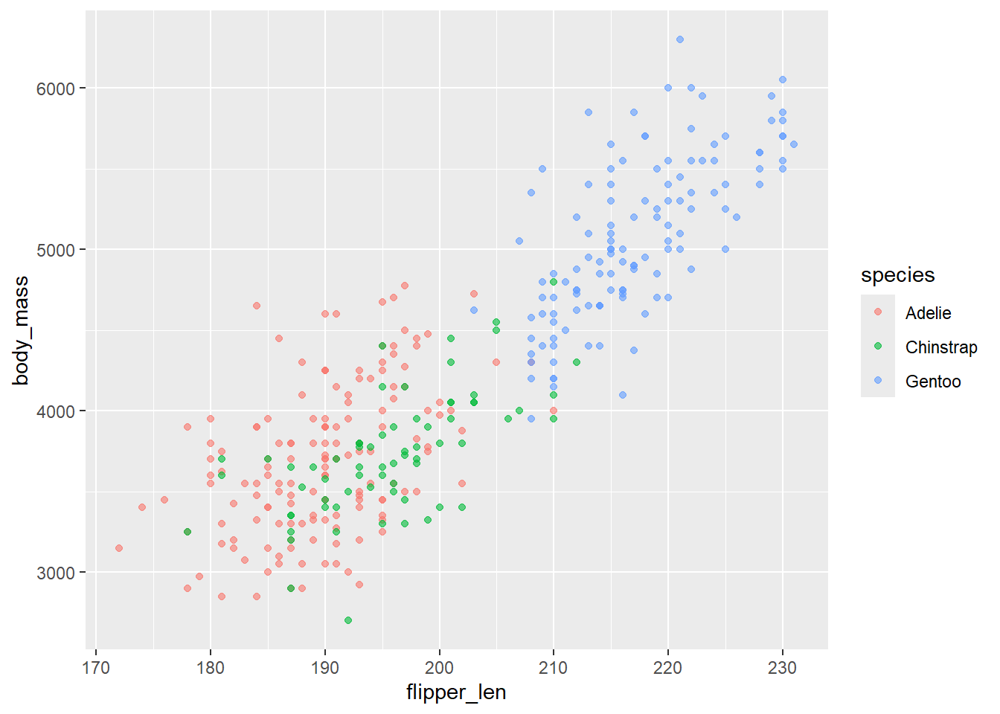
ggplot(penguins, aes(flipper_len, body_mass / 1000, color = species)) +
geom_point(alpha = 0.6, na.rm = TRUE) +
scale_x_continuous(name = "duljina peraje (mm)",
breaks = seq(170, 230, 20)) +
scale_y_continuous(name = "tjelesna masa (kg)") +
scale_color_discrete(name = "vrsta pingvina",
labels = c("Adelijski", "Ogrličasti", "Žutonogi"))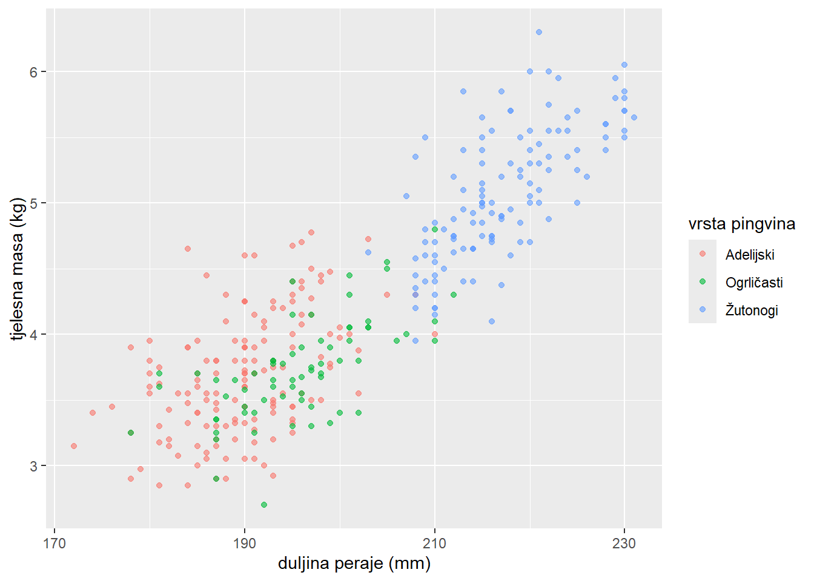
9.3.5.1 Logaritamska skala
Kada vrijednosti obuhvaćaju velik raspon ili odnos među varijablama nalikuje eksponencijalnom trendu, može biti korisna logaritamska skala. Umjesto standardne kontinuirane skale možemo koristiti scale_x_log10() ili scale_y_log10(). Postoje i druge transformacije, poput scale_*_reverse() i scale_*_sqrt(). U primjerima s pingvinima logaritamska skala nije osobito potrebna pa je ovdje samo spominjemo.
9.3.5.2 Skale za prilagodbu boja
Estetike color i fill često prilagođavamo posebnim skalama. Funkcija scale_fill_brewer() nudi gotove palete boja za diskretne vrijednosti, a scale_fill_manual() omogućuje vlastiti odabir boja. Za kontinuirane vrijednosti postoji, među ostalim, scale_fill_gradient(); analogne funkcije postoje i za estetiku color.
Paket RColorBrewer omogućuje pregled dostupnih paleta funkcijom display.brewer.all(). Za prikaz paleta možemo upotrijebiti:
Zadatak 9.24 - prilagodba boja na grafu
Na sljedećem grafu treba najprije odabrati gotovu paletu za diskretne vrijednosti (npr. "Set2"), a zatim isprobati vlastite boje. Kod ručnog zadavanja boja korisno je imenovati vrijednosti prema kategorijama kako bi pridruživanje ostalo jasno.
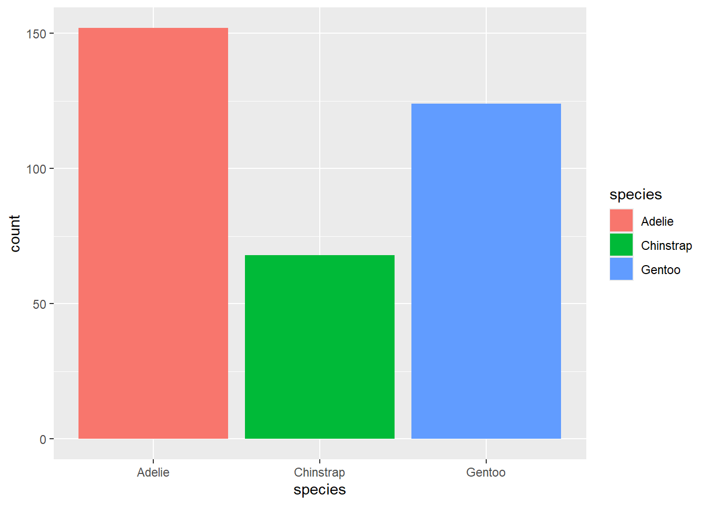
ggplot(penguins, aes(x = species, fill = species)) +
geom_bar() +
scale_fill_brewer(palette = "Set2")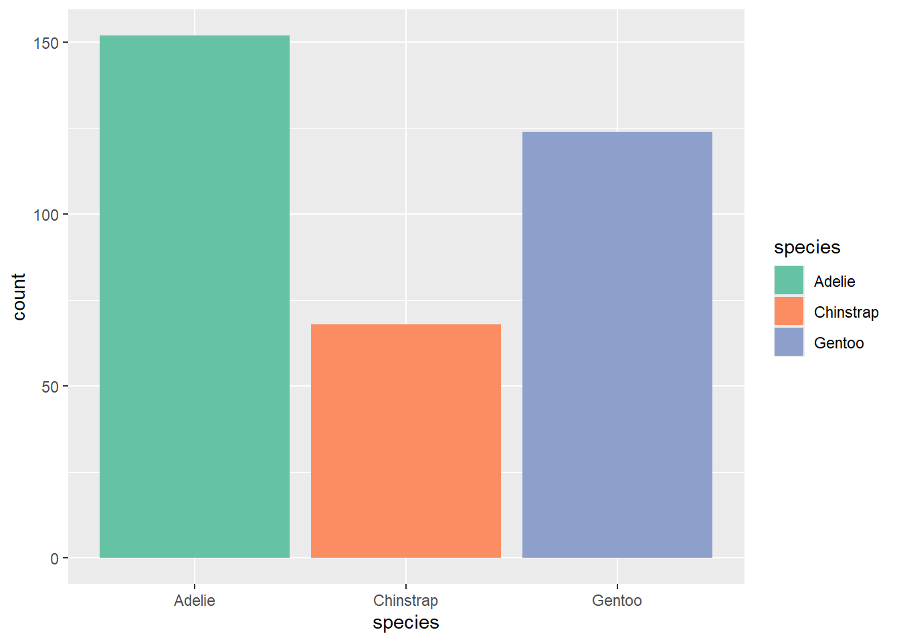
ggplot(penguins, aes(x = species, fill = species)) +
geom_bar() +
scale_fill_manual(values = c(Adelie = "black",
Chinstrap = "gray60",
Gentoo = "orange"))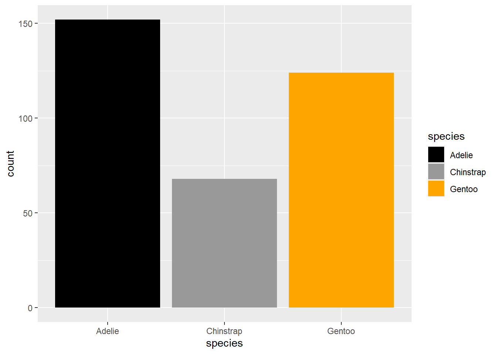
Legendom možemo upravljati i funkcijom guides(): primjerice, guides(fill = "none") uklanja samo legendu za estetiku fill, dok theme(legend.position = "none") uklanja sve legende.
9.3.5.3 Aspekt koordinatnog sustava
Koordinatni sustav određuje način prikaza podataka. coord_cartesian() koristi Kartezijev koordinatni sustav i omogućuje zumiranje na odabrani dio grafa; coord_flip() zamjenjuje vodoravnu i okomitu os, a coord_polar() prikazuje podatke u polarnim koordinatama. Važno je razlikovati zumiranje pomoću coord_cartesian() od ograničavanja skale koje može izostaviti podatke iz statističkog izračuna.
9.3.6 Uvjetni (facetirani) grafovi
Već smo vidjeli kako više grupa možemo razlikovati na istom grafu bojom, oblikom ili drugim estetikama. Facetiranje umjesto toga stvara zasebne panele za različite kategorije, što olakšava usporedbu pojedinih podskupova.
Za to koristimo facet_grid() ili facet_wrap(). Funkcija facet_grid() organizira panele prema jednoj ili dvjema kategorijskim varijablama, a facet_wrap() raspoređuje panele u više redaka i stupaca.
Za zapis rasporeda u facet_grid() koristimo notaciju statističkih formula sa znakom ~. Izraz y ~ x čitamo kao „y u ovisnosti o x”; kod facetiranja lijeva strana određuje retke, a desna stupce. Tako island ~ sex označava otoke u redovima i spol u stupcima, dok island ~ . daje po jedan panel za svaki otok, u jednom stupcu.
Zadatak 9.25 - funkcija ‘facet_grid’
Histogram duljine peraje pingvina prvo razdvojite prema kombinaciji otoka i spola, a zatim samo prema otoku, tako da paneli budu poredani u stupac.
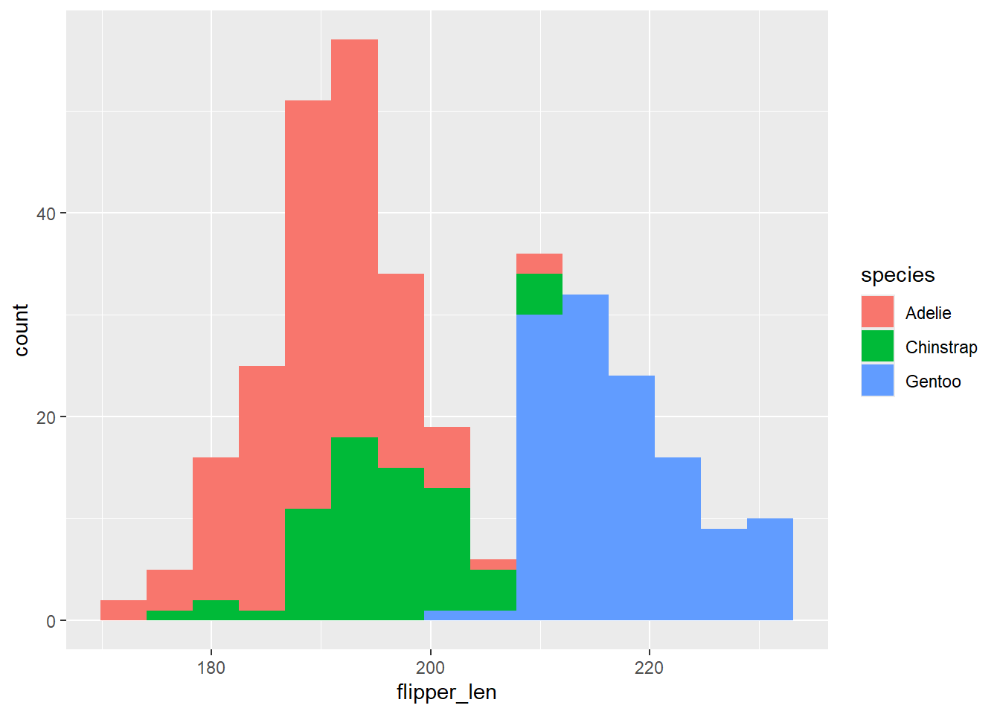
ggplot(penguins, aes(x = flipper_len, fill = species)) +
geom_histogram(bins = 15, na.rm = TRUE) +
facet_grid(island ~ sex)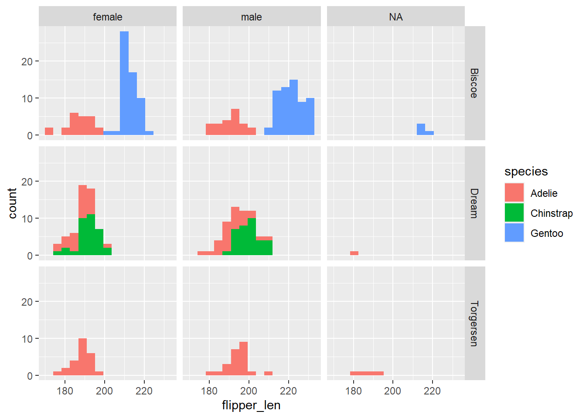
ggplot(penguins, aes(x = flipper_len, fill = species)) +
geom_histogram(bins = 15, na.rm = TRUE) +
facet_grid(island ~ .)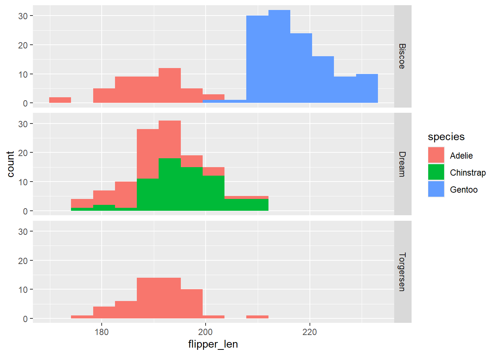
Paneli u pravilu dijele skale, što omogućuje izravnu usporedbu. Po potrebi se parametrom scales mogu postaviti slobodne skale ("free", "free_x" ili "free_y").
9.3.7 Dodavanje vlastitih elemenata na graf
Osim geometrija kojima prikazujemo podatke, na graf možemo dodavati vlastite oznake i referentne linije. Funkcija annotate() omogućuje dodavanje točke ili teksta na zadane koordinate, a geom_hline(), geom_vline() i geom_abline() crtaju vodoravne, okomite i kose linije.
Sljedeći graf prikazuje nekoliko primjera anotiranja. Referentna točka i linije služe primarno ilustraciji anotiranja, ne radi se o statističkim procjenama dobivenim iz skupa podataka.
ggplot(penguins, aes(flipper_len, body_mass / 1000)) +
geom_point(alpha = 0.3, na.rm = TRUE) +
annotate("point", x = 200, y = 4.5,
color = "red", size = 4) +
annotate("text", x = 200, y = 4.5,
label = "Referentna točka",
color = "red", hjust = -0.1, vjust = -0.5) +
geom_hline(yintercept = 4.5, linetype = "dashed", color = "red") +
geom_vline(xintercept = 200, linetype = "dashed", color = "blue") +
geom_abline(intercept = -4, slope = 0.04, color = "darkgreen") +
labs(x = "Duljina peraje (mm)", y = "Masa (kg)")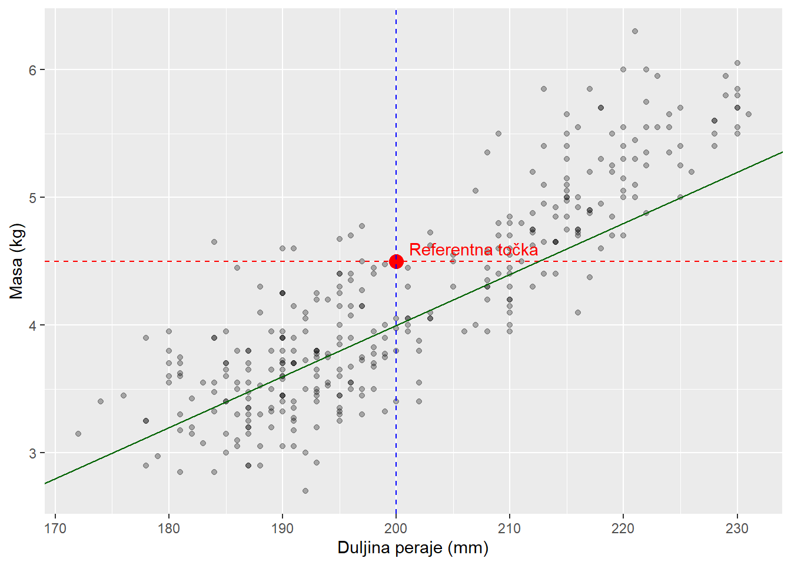
9.3.8 Grafovi u eksploratornoj analizi i izvještavanju
Za kraj možemo se osvrnuti na razliku između grafova za eksploratornu analizu i onih koje koristimo u izvještajima. Kod eksploratorne analize često nam je važnije brzo isprobati više prikaza, pronaći obrasce, distribucije, grupiranja i izdvojene vrijednosti. Za takav pregled može poslužiti funkcija ggpairs() iz paketa GGally, koja prikazuje odnose više varijabli.
Kod izvještavanja naglasak je na jasnoj komunikaciji zaključaka. Poznat povijesni primjer takve vizualizacije jest graf Florence Nightingale o uzrocima smrtnosti u vojnim bolnicama. Izvještajni graf treba biti razumljiv i čitatelju koji nije sudjelovao u analizi: zato su važni naslovi, oznake, anotacije, odabir boja i dosljedna tema.
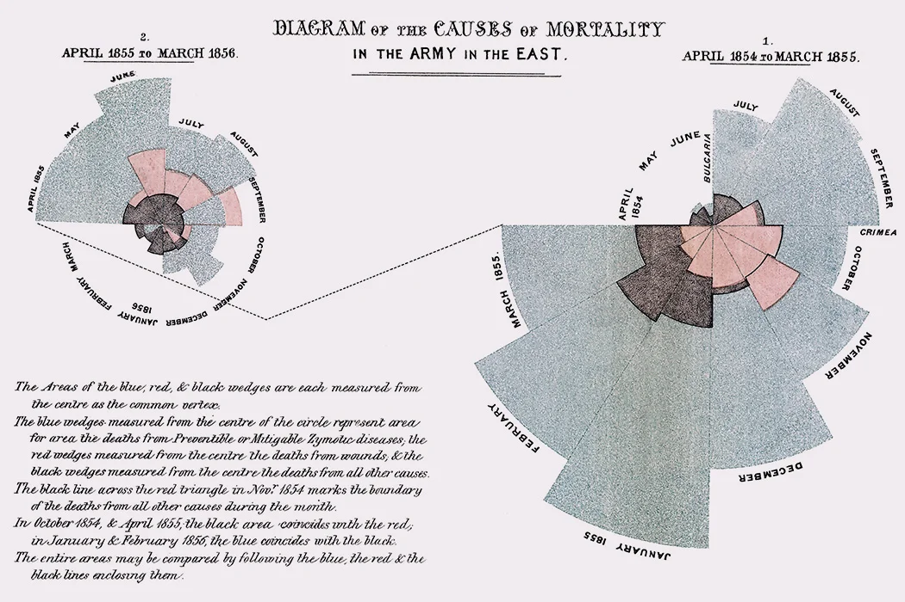
Slika 9.1: Diagram of the causes of mortality in the army in the East by Florence Nightingale, 1858, Wikimedia Commons
Ponekad želimo prikazati više zasebnih grafova u jednoj slici. Paket gridExtra sadrži funkciju grid.arrange() koja omogućuje slaganje grafova u matricu. U sljedećem primjeru prikazujemo četiri različita pogleda na podatke o pingvinima, s dosljednim bojama za vrste.
boje_vrsta <- c(Adelie = "#4E79A7", Chinstrap = "#F28E2B",
Gentoo = "#59A14F")
g1 <- ggplot(penguins, aes(flipper_len, bill_len, color = species)) +
geom_point(alpha = 0.7, size = 1.5, na.rm = TRUE) +
scale_color_manual(values = boje_vrsta) +
labs(title = "Odnos peraja i kljuna", x = "Peraja (mm)",
y = "Kljun (mm)", color = NULL)
g2 <- ggplot(penguins, aes(x = sex, fill = species)) +
geom_bar(position = position_dodge(width = 0.8),
width = 0.7, color = "white", linewidth = 0.4,
na.rm = TRUE) +
scale_fill_manual(values = boje_vrsta) +
scale_x_discrete(labels = c(female = "Ženke", male = "Mužjaci")) +
labs(title = "Spol i vrsta pingvina",
x = NULL, y = "Broj pingvina", fill = NULL)
g3 <- ggplot(penguins, aes(x = as.factor(year), fill = species)) +
geom_bar(width = 0.65, color = "white", na.rm = TRUE,
position = "dodge") +
facet_grid(island ~ .) +
scale_fill_manual(values = boje_vrsta) +
labs(title = "Broj opservacija po otocima i godinama",
x = NULL, y = "Broj pingvina")
g4 <- ggplot(penguins, aes(species, body_mass / 1000, fill = species)) +
geom_violin(alpha = 0.65, trim = FALSE, na.rm = TRUE) +
geom_boxplot(width = 0.12, fill = "white", alpha = 0.85,
outlier.shape = NA, na.rm = TRUE) +
scale_fill_manual(values = boje_vrsta) +
labs(title = "Masa po vrstama", x = NULL, y = "Masa (kg)")Kako bismo izbjegli ponavljanje legendi, uklonit ćemo ih s tri grafa i složiti grafove u matricu 2 × 2.
g1 <- g1 + guides(color = "none")
g3 <- g3 + guides(fill = "none")
g4 <- g4 + guides(fill = "none")
gridExtra::grid.arrange(g1, g2, g3, g4, nrow = 2, ncol = 2)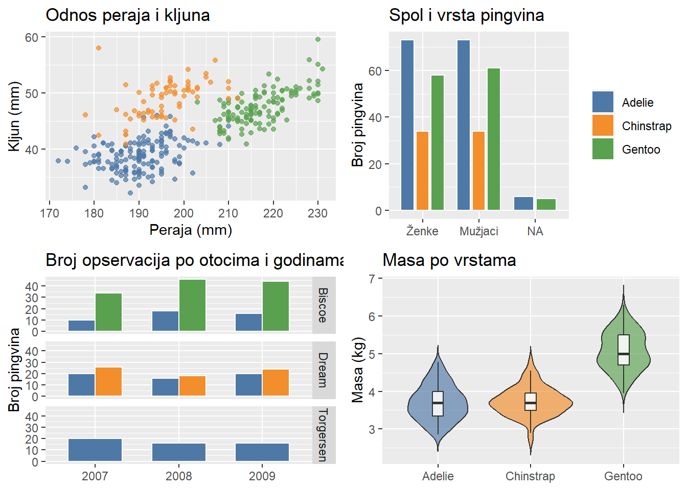
Ovime završavamo priču o gramatičkoj geometriji, njezinim aspektima i primjeni uz pomoć paketa ggplot2. Ovdje nisu ni približno objašnjenje sve mogućnosti ovoga paketa, zbog čega se snažno preporučuje dodanto čitanje dokumentacije i referenciranje na podsjetnik koji sadrži niz geometrija i opcija za koje u ovim lekcijama nije bilo mjesta. Također, ne treba zaboraviti na niz dodatnih paketa koji dodatno proširuju mogućnosti paketa ggplot2, a koje bi trebalo potražiti u ovisnosti o našim zahtjevima i željama glede vizualizacija koje želimo stvoriti za naše projekte podatkovne analize. Za inspiraciju zgodno je pogledati galeriju grafova i slika nastalih uz pomoć jezika R, a koja je dostupna na ovoj poveznici .
Zadaci za vježbu
- Učitajte i proučite podatkovni skup
diamondskoji dolazi zajedno s paketomggplot2.
Prikažite raspodjelu cijene dijamanata uz pomoć dva grafa - histograma i tzv. frekvencijskih poligona (funkcija
geom_freqpoly)). Cijene podijelite u 10 ladica.Grafovima iz a) dodajte “čistoću” dijamanta (stupac
clarity) koji ćete postaviti nafillestetiku (histogram) odnosnocolorestetiku (frekvencijski poligoni). Koju razliku između grafova uočavate obzirom na default-ni aspekt pozicije?
- Učitajte i proučite podatkovni skup
mpg. Pokušajte rekonstruirati sljedeće grafove. Nepoznate geometrije identificirajte uz pomoć podsjetnika.
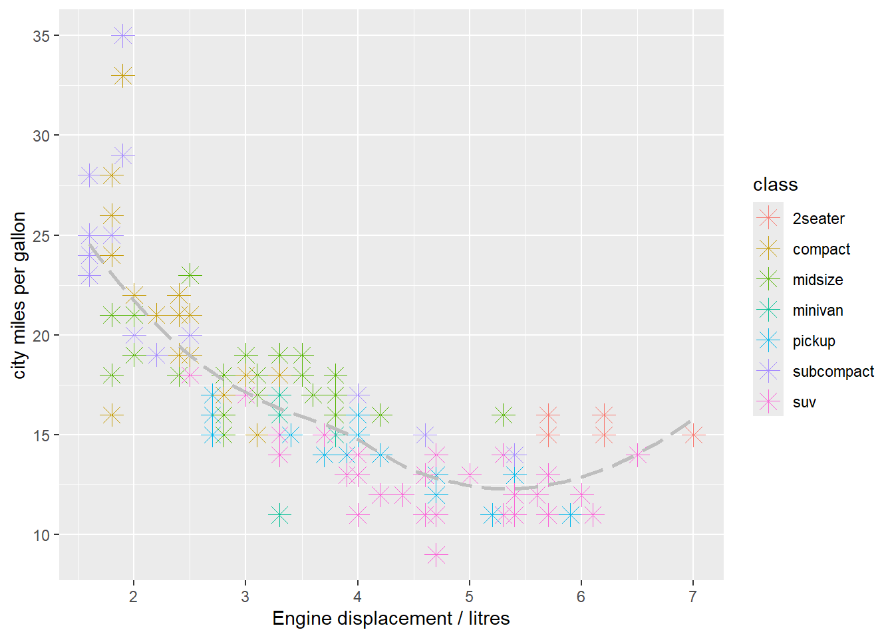
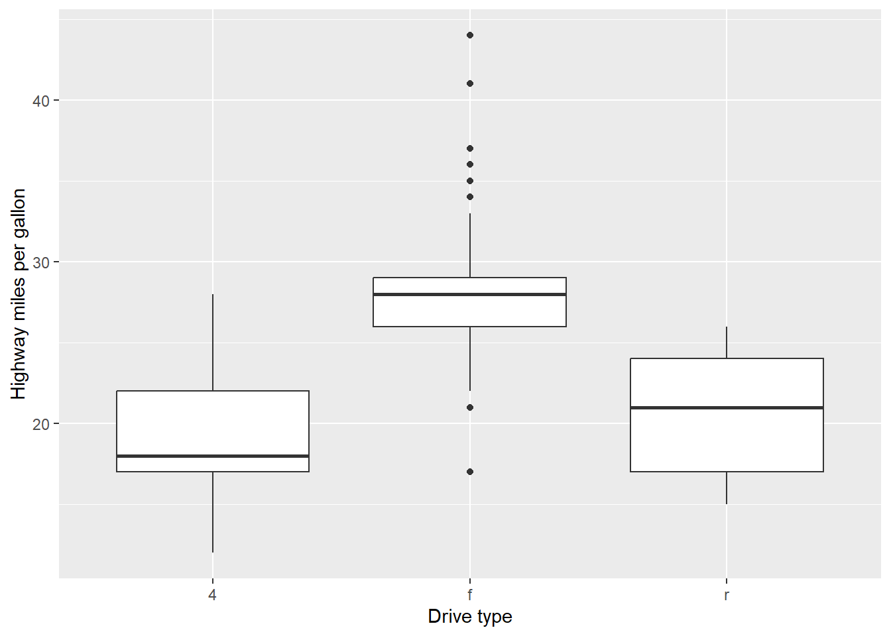
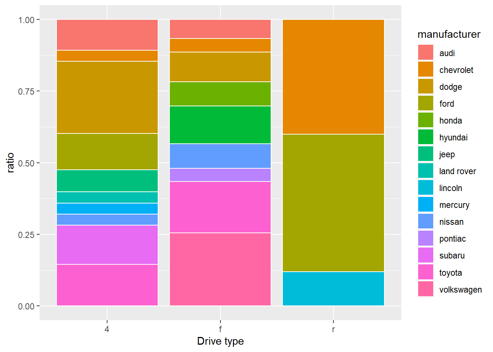
- Uz pomoć funkcija skaliranja na sljedećem grafu:
- os x nazovite
"broj cilindara" - os y nazovite
"ukupno"i povećajte raspon do 100 - legendu za godine nazovite
"godina" - za boju pravokutnika odaberite paletu
"Dark2"
- os x nazovite
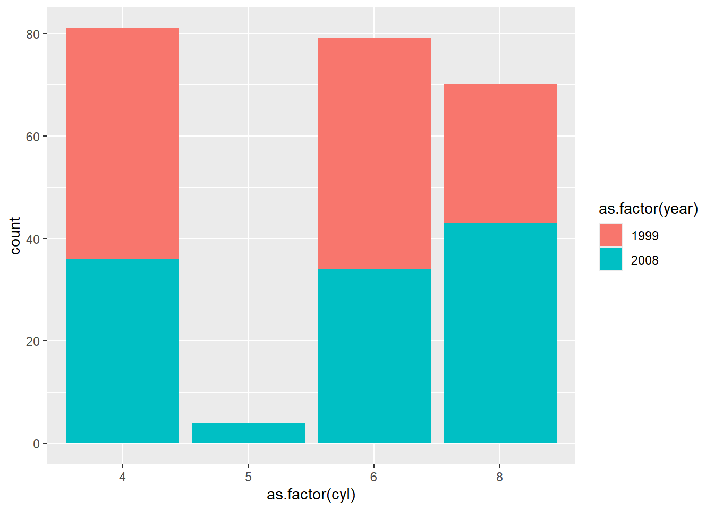
- Promijenite temu sljedećeg grafa na sljedeći način:
- prilagodite prikaz projekciji na platno
- okrenite nazive na x osi vertikalno
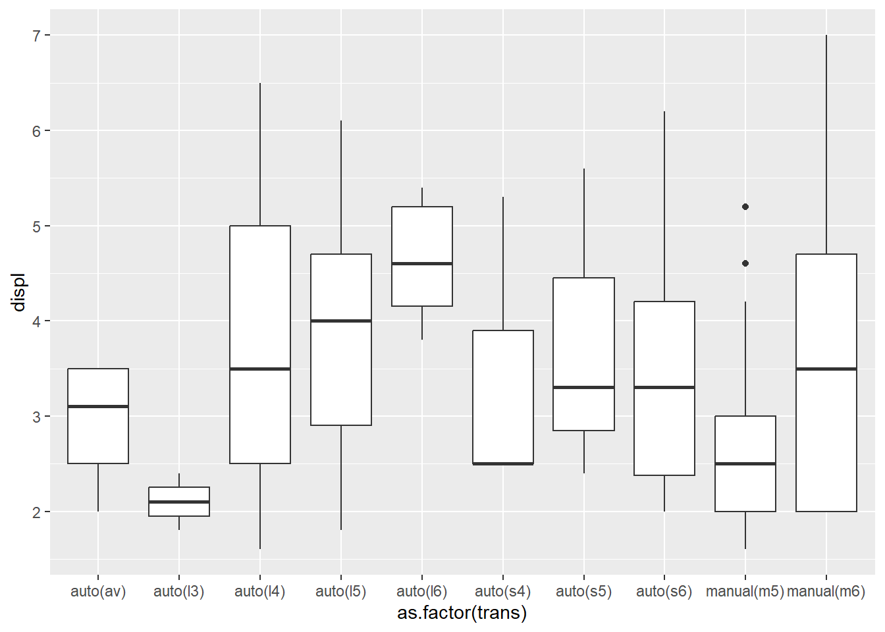
- Sljedeći graf prikazuje histogram potrošnje na autocesti pri čemu boja pravokutnika odražava broj cilindara. Pokušajte poboljšati interpretabilnost grafa tako da estetiku boje zamijenite prikazom više grafova uvjetovanih brojem cilindara. Grafove organizirajte u matricu 2 x 2.
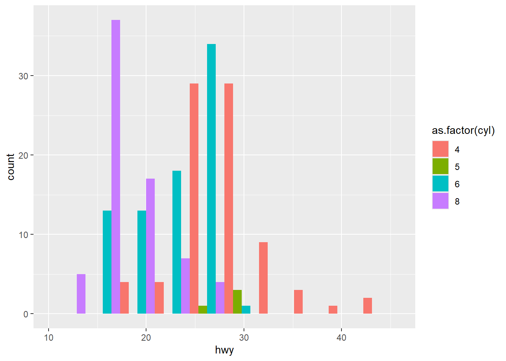
- Pretpostavimo da imamo sljedeći podatkovni okvir:
prodaja <- data.frame(mjesec = 1:12,
ukupno = c(10000, 5000, 12000, 3000, 5000, 7000,
10000, 2000, 4000, 8000, 11000, 14000))i da ga želimo predočiti stupčastim grafom (engl. bar chart), no funkcija geom_bar po default-u radi sa samo jednom varijablom za koju računa sumarne statistike. Kako riješiti ovaj problem? Predložite rješenje i stvorite odgovarajući stupčasti graf.

Programirajmo u R-u by Damir Pintar is licensed under a Creative Commons Attribution-NonCommercial-NoDerivatives 4.0 International License.
Based on a work at https://ratnip.github.io/FER_OPJR/